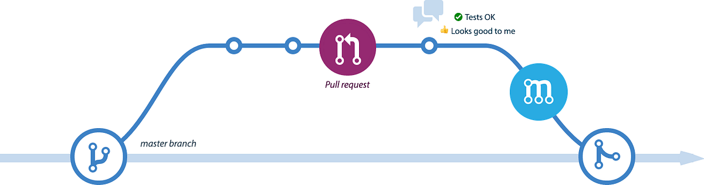

Sobre o Projeto
<<<<<<< adicionar-imagemEste projeto tem como objetivo ensinar o fluxo de trabalho do GitHub, incluindo a criação de branches, commits, Pull Requests e revisões de código.
 =======Este projeto tem como objetivo ensinar o fluxo de trabalho do GitHub, incluindo a criação de branches, commits, Pull Requests e revisões de codigo.
>>>>>>> mainFuncionalidades
- Visualização de paginas HTML simples.
- Interação com formulários.
- Design simples e responsivo.